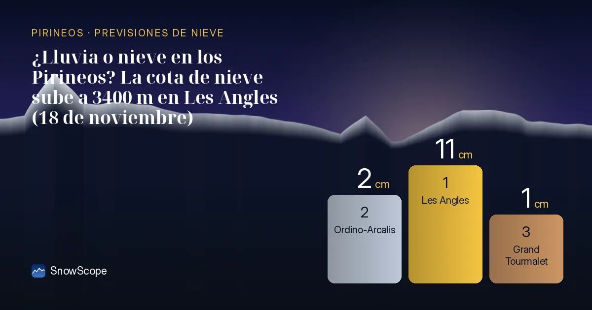
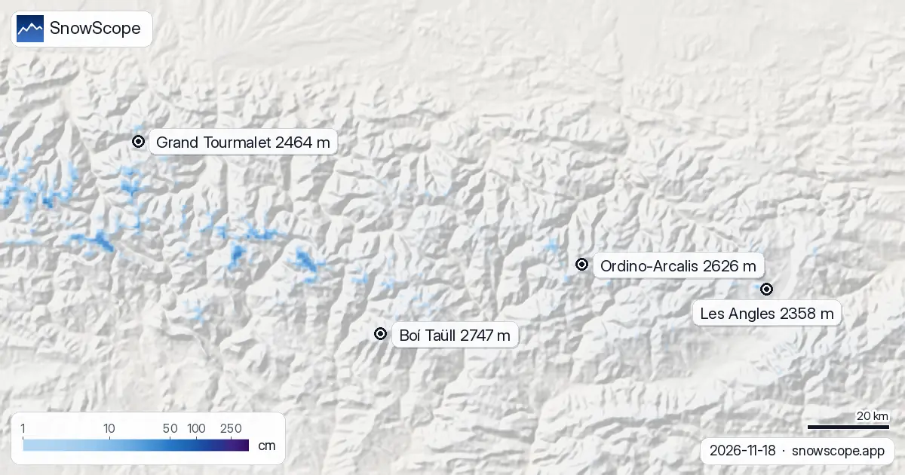

¿Lluvia o nieve en los Pirineos? La cota de nieve sube a 3400 m en Les Angles (18 de noviembre)
Se acerca lluvia a los Pirineos, pero que caiga como nieve o lluvia depende de la altitud y la hora del día. Durante los próximos cuatro días el nivel de 0 °C (la altitud donde la temperatura del aire cruza el punto de congelación) oscilará bruscamente, desde tan bajo como 1.900 m el viernes 20 de noviembre hasta tan alto como 3.670 m el jueves 19 de noviembre. En las horas más cálidas, cuando la cota de nieve se sitúa aproximadamente 300 m por debajo, llega a 3.400 m en Les Angles el jueves.
Consulta la previsión de nieve en tiempo real de Boí Taüll en la app SnowScopeEspesor de nieve, alertas de nieve polvo y mapa 3D, gratis.
¿Qué estaciones reciben lluvia sobre la nieve?
Les Angles acumula alrededor de 11 cm en sus pendientes superiores, pero está en riesgo durante tres días: miércoles 18 de noviembre, jueves 19 de noviembre y sábado 21 de noviembre. En esas fechas la cota de nieve sube por encima de media montaña, así que si llueve, esa lluvia cae sobre la nieve existente, haciéndola pesada y compacta hasta que se congela.
Boí Taüll y Ordino-Arcalis se enfrentan a un problema diferente: el miércoles y jueves sus cotas de nieve son tan altas (por encima de 3.000 m en la hora más cálida) que cualquier precipitación cae como lluvia en toda la montaña. Solo el viernes 20 de noviembre baja la cota de nieve lo suficiente para proteger estas estaciones.
| Estación | Espesor de nieve | Nieve nueva, 72 h | Previsto, próximos días | Cota máx. |
|---|---|---|---|---|
| Boí Taüll | 0 cm | 2 cm | 5 cm | 2747 m |
| Ordino-Arcalis | 2 cm | 1 cm | 5 cm | 2626 m |
| Grand Tourmalet | 1 cm | 1 cm | 7 cm | 2464 m |
| Les Angles | 11 cm | 0 cm | 3 cm | 2358 m |

El nivel de 0 °C día a día
Miércoles 18 de noviembre: el nivel de congelación oscila entre 2.800 m (antes del amanecer) y 3.520 m (horas más cálidas). El jueves 19 de noviembre es el más extremo: comienza apenas en 1.920 m pero sube a 3.670 m a media tarde. El viernes 20 de noviembre es el más frío y estable: 1.900 m a 2.570 m, así que la nieve cae más baja y la lluvia baja por la montaña. El sábado 21 de noviembre se recupera ligeramente: 2.350 m a 3.150 m.
Lluvia y nieve en Baqueira-Beret y Saint-Lary
Baqueira-Beret (2.510 m) está en la trayectoria prevista de 20 mm de lluvia durante los próximos días. Mientras cae, el nivel de congelación se sitúa alrededor de 2.720 m, poniendo la cota de nieve cerca de 2.420 m. Esto está justo por debajo de la altitud de la estación, así que la lluvia temprana se mezclará con nieve que se derrite.
Saint-Lary (2.515 m) se enfrenta a más precipitación: 27 mm repartidos en el período. El nivel de congelación allí se mantiene más alto, alrededor de 3.000 m de media, así que la cota de nieve se sitúa cerca de 2.700 m. Saint-Lary está justo debajo, lo que significa que la mayor parte del período húmedo será en o por encima del área esquiable.
Por qué la nieve cae 300 m por debajo del nivel de congelación
El nivel de 0 °C marca dónde la temperatura del aire cruza el punto de congelación, pero los copos de nieve no se convierten en lluvia al instante. Mientras caen a través del aire más cálido debajo de ese nivel, comienzan a derretirse. Este derretimiento toma tiempo—normalmente unos cuantos cientos de metros de descenso—así que la transición de nieve a lluvia sucede alrededor de 300 m más baja que el nivel de congelación en sí. Esa altitud más baja es lo que llamamos cota de nieve.
Las primeras horas de la mañana y las últimas de la tarde significan aire más frío, así que la cota de nieve sube más entonces. Las horas más cálidas alrededor del mediodía empujan la cota de nieve hacia abajo más bruscamente. Saber esto te ayuda a elegir pendientes orientadas al norte y terreno superior cuando la cota de nieve está subiendo hacia la tarde.
Timing práctico para los próximos cuatro días
El jueves 19 de noviembre es el día que el nivel de 0 °C alcanza su pico (3.670 m al mediodía). Si esquías ese día, mantente por encima de 3.000 m para evitar las horas más cálidas y más húmedas. El viernes 20 de noviembre es más frío durante todo el día y trae las condiciones de nieve más estables; el nivel de congelación apenas sube por encima de 2.570 m. El sábado 21 de noviembre se calienta de nuevo pero no al extremo del jueves, así que las condiciones se sitúan entre ambos. Para el domingo 22 de noviembre llega otra ronda de precipitación, pero el nivel de congelación se ha recuperado a alrededor de 2.350 m de mínimo.
Consejos para esquiadores
- El miércoles, jueves y sábado, mantente por encima de 3.200 m en Les Angles para quedarte por encima del límite lluvia-nieve durante las horas de tarde.
- El viernes 20 de noviembre es el mejor día para esquiar nieve establecida: el nivel de congelación se mantiene bajo (1.900 m a 2.570 m) durante todo el día, así que la nieve húmeda es menos problemática.
- El nivel de 0 °C es una previsión y puede cambiar varios cientos de metros; consulta el mapa de nuevo la noche anterior, especialmente el jueves cuando el rango es más amplio.
- El aire cálido ablanda la nieve desde el mediodía en adelante, así que si haces travesías o esquías fuera de pista, comienza temprano y termina antes de las 2 p.m.; consulta siempre el boletín oficial de aludes de tu zona primero.
- La nieve marcada en el mapa no confirma que una estación esté abierta: comprueba el estado de los remontes y las fechas de apertura en la web de cada estación antes de viajar.
Sobre estas cifras
Los espesores de nieve de las estaciones son la nieve más profunda en las pistas altas en la fecha indicada; son estimaciones para una zona, no una medida en un punto. Las previsiones pueden cambiar. Consulta siempre el boletín oficial de aludes antes de salir fuera de pista.
Boletines oficiales de aludes: Météo-France / Meteocat / AEMET
Citar este informe
Para investigación, docencia o prensa: cifras y gráficos reutilizables libremente bajo CC BY 4.0 con esta cita.
SnowScope (2026), ¿Lluvia o nieve en los Pirineos? La cota de nieve sube a 3400 m en Les Angles (18 de noviembre), https://snowscope.app/blog/es/2026/11/pyrenees-freezing-level-snow-line-18-november-2026.html, consultado el 2026-11-18
SnowScope (Atlas Labs). (2026, November 18). ¿Lluvia o nieve en los Pirineos? La cota de nieve sube a 3400 m en Les Angles (18 de noviembre). SnowScope snow reports. https://snowscope.app/blog/es/2026/11/pyrenees-freezing-level-snow-line-18-november-2026.html
BibTeX
@misc{snowscope2026pyreneesfreezinglevelsno,
author = {{SnowScope (Atlas Labs)}},
title = {¿Lluvia o nieve en los Pirineos? La cota de nieve sube a 3400 m en Les Angles (18 de noviembre)},
year = {2026},
month = nov,
howpublished = {\url{https://snowscope.app/blog/es/2026/11/pyrenees-freezing-level-snow-line-18-november-2026.html}},
note = {Published 2026-11-18 12:42 UTC; accessed 2026-11-18}
}· CC BY 4.0 · Métodos, datos y herramientas →
Boí Taüll: nieve y temperatura según la altura, este invierno vs el pasado (herramientas) →
Sigue Boí Taüll
Gratis: un aviso cuando llega la nieve y la previsión cada mañana.
Más partes de nieve

El nivel de 0 °C sube hasta 3200 m el martes, trayendo lluvia a las laderas de media montaña. La cota de nieve se mantiene por encima de la base en la mayoría de estaciones hasta el miércoles.

Nieve en Andorra el 17 de noviembre: manto de nieve, nieve nueva, espesor por altitud, próximos días y mejores estaciones.

Nivel de congelación de los Pirineos el 10 de noviembre: 0 °C oscila entre 2420 m y 3710 m en toda la región. La línea de nieve llega hasta 3400 m; riesgo de lluvia sobre nieve durante tres días.